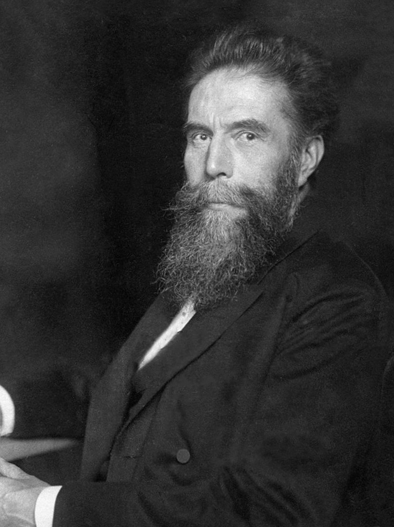

Un físico descubre unos rayos desconocidos que atraviesan la materia opaca
Del gabinete del profesor Röntgen, en Wurzburgo, llega noticia de unos rayos desconocidos que atraviesan la madera, el metal delgado y aun la carne, y a los que ha llamado provisionalmente rayos X. Trasciende que habría retratado los huesos de una mano viva. La imagen, si se confirma, promete abrir a la medicina una ventana insospechada.

Del gabinete de física de la Universidad de Wurzburgo llega una noticia que tiene perplejos a los hombres de ciencia. El profesor Wilhelm Conrad Röntgen, trabajando de noche y a solas con uno de esos tubos que descargan electricidad en el vacío, los llamados tubos de rayos catódicos, ha advertido algo que no esperaba: aun cubierto el tubo con un cartón negro que no deja pasar la luz, una pantalla preparada con cierta sal, olvidada sobre la mesa a distancia, se ponía a brillar. Algo invisible salía del aparato, atravesaba el cartón y encendía la pantalla. A esa cosa desconocida el profesor la ha llamado, provisionalmente, rayos X.
Repetida la experiencia una y otra vez, el profesor ha comprobado que estos rayos poseen una virtud asombrosa: atraviesan cuerpos que la luz no traspasa. Pasan por la madera, por el caucho, por gruesos libros, por delgadas láminas de metal, y van a impresionar la pantalla o la placa que se les ponga detrás. No todos los cuerpos los detienen por igual: los densos, como los metales, proyectan sombra; los ligeros apenas los estorban. De la naturaleza íntima de estos rayos nada se sabe aún con certeza: no se los ve, no se los siente, no se desvían como la luz ordinaria. Solo se los conoce por lo que hacen.
El hallazgo no cae en tierra baldía. Desde hace años los físicos de media Europa se afanan con estos tubos de vidrio en que la corriente, saltando en el vacío, produce resplandores extraños; nombres como Crookes, Hertz y Lenard han descrito toda suerte de fenómenos sin dar con éste. Los gabinetes se han llenado de esos aparatos que parecen juguetes de feria y que, sin embargo, van revelando propiedades de la materia y de la electricidad insospechadas por nuestros abuelos. Röntgen, hombre metódico y reacio al ruido, no buscaba maravillas: seguía paso a paso un experimento conocido cuando la pantalla olvidada le salió al encuentro con su brillo inexplicable.
Y aquí la noticia se tiñe de algo que roza el prodigio. Trasciende de Baviera que el profesor no se ha detenido en las cosas inertes: habría interpuesto una mano humana entre el tubo y la placa, y obtenido en ella el dibujo de los huesos vivos, con un anillo destacándose oscuro en un dedo, como si la carne se hubiera vuelto niebla. Se dice, y lo damos por lo que vale, que la mano fue la de su propia esposa, doña Anna Bertha, y que al contemplar su esqueleto retratado la dama murmuró, sobrecogida: «He visto mi muerte». Verdad o hablilla de corredores, la imagen basta para estremecer a cualquiera.
Cuesta medir adónde puede llevar semejante descubrimiento. Si de veras es posible retratar los huesos dentro de un cuerpo vivo sin abrirlo, no hará falta mucha imaginación para adivinar lo que ello significaría en manos de los médicos y de los cirujanos: ver la bala alojada, el hueso quebrado, sin más herida que la de la luz. El diario prefiere la cautela, que tantas maravillas anunciadas se quedan luego en humo de laboratorio. Mas si los ensayos de Wurzburgo confirman lo que de ellos trasciende, habremos de anotar que en una mesa a oscuras, casi por azar, un hombre ha aprendido a mirar a través de la carne.